Identificar
Reconocer usuarios, grupos y políticas.
Usuarios, grupos, políticas y pruebas de acceso.
Una guía en español para repetir la práctica y entender por qué AWS permite o deniega cada operación.
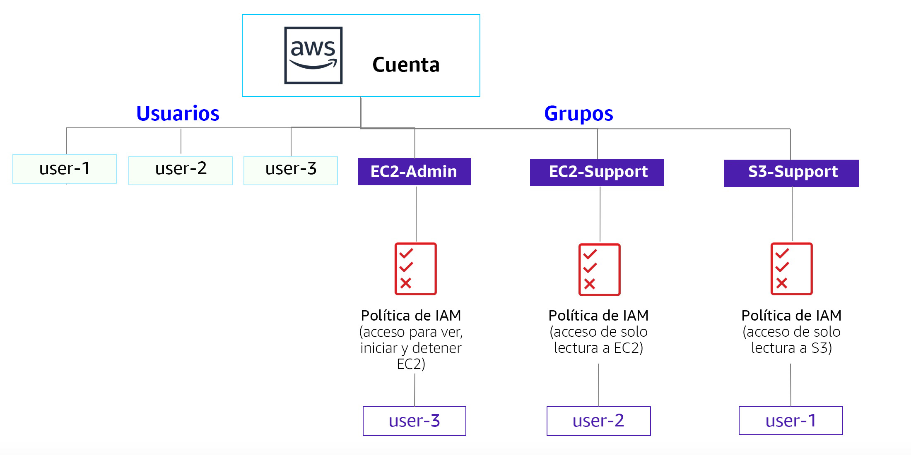
01 Panorama
El objetivo es aplicar el principio de mínimo privilegio: conceder solo los permisos necesarios para cada función.
Reconocer usuarios, grupos y políticas.
Asignar cada usuario al grupo correcto.
Comparar lectura, rechazo y una solicitud autorizada.
| Usuario | Grupo | Acceso previsto |
|---|---|---|
| user-1 | S3-Support | Consultar Amazon S3. |
| user-2 | EC2-Support | Consultar instancias de Amazon EC2. |
| user-3 | EC2-Admin | Consultar, iniciar y detener EC2 según la política del laboratorio. |
Cómo interpretar la evidencia
Observado significa que la grabación permite comprobar el resultado descrito. Esperado / por verificar indica el comportamiento previsto por la guía o la política, pero no una prueba capturada.
02 Preparación
Inicia el entorno desde AWS Academy, abre la consola del laboratorio y busca IAM. Entra en Identity and Access Management, sin confundirlo con IAM Identity Center.
user-1, user-2 y user-3.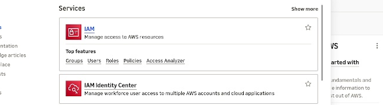
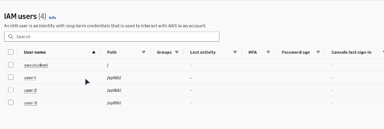
Entorno autorizado
Trabaja únicamente en el laboratorio. Los usuarios, grupos y recursos ya están preparados; no los recrees ni modifiques el usuario administrativo de la sesión.
03 Reconocimiento
Revisa user-1 en Permissions y Groups. Después localiza los grupos EC2-Admin, EC2-Support y S3-Support, sin añadir usuarios todavía.
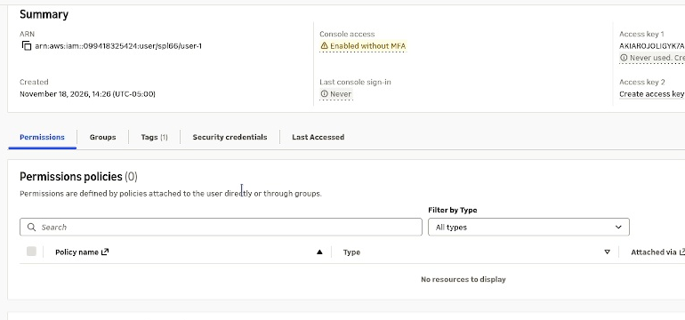
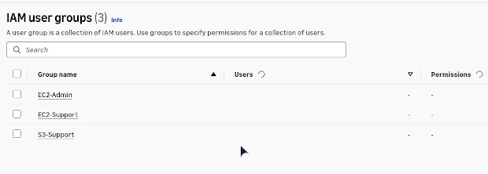
Concepto clave
Un grupo organiza usuarios con necesidades de acceso similares. Las políticas adjuntas al grupo se aplican a sus miembros; el grupo no es una cuenta con la que se inicie sesión.
04 Políticas
En EC2-Support, revisa AmazonEC2ReadOnlyAccess; en S3-Support, identifica AmazonS3ReadOnlyAccess. Ambas políticas permiten consultar, no escribir ni cambiar estados.
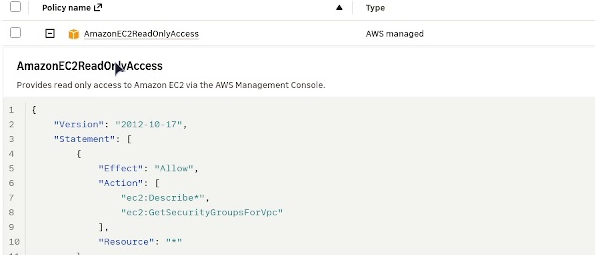
| Elemento | Qué significa |
|---|---|
| Effect | Allow permite la acción de esa regla; Deny la deniega. |
| Action | Identifica operaciones de la API, por ejemplo ec2:Describe*. |
| Resource | Delimita los recursos sobre los que actúa la regla. Un asterisco no autoriza todas las acciones. |
Lectura no es administración
AmazonEC2ReadOnlyAccess permite consultas de EC2, pero no incluye ec2:StopInstances. Poder ver una instancia no permite detenerla.
En el grupo EC2-Admin, revisa la política integrada EC2-Admin-Policy. Usa la política existente: el nombre del grupo no equivale a AdministratorAccess ni concede acceso total a la cuenta.
| Tipo | Relación con la identidad |
|---|---|
| AWS managed | Política independiente creada y mantenida por AWS; puede adjuntarse a varias identidades. |
| Customer inline | Política integrada en una identidad concreta, en este caso el grupo EC2-Admin. |
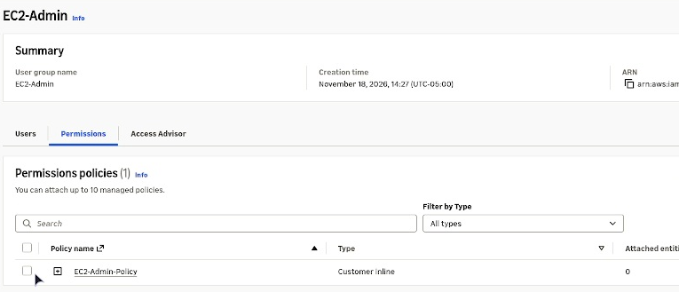
05 Asignaciones
En User groups, entra a cada grupo, abre Users y usa Add users. Tras confirmar, verifica el nombre del usuario en la lista de miembros.
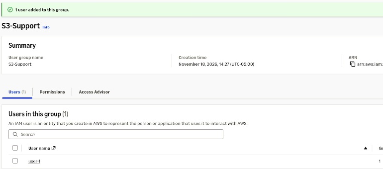
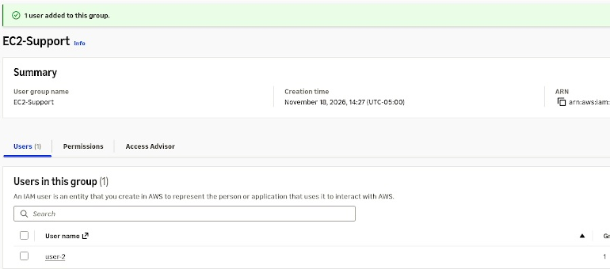
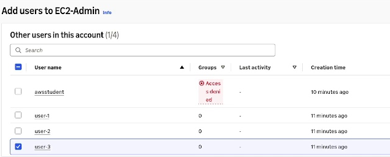
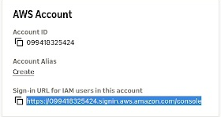
Selección no es comprobación final
La selección de user-3 debe confirmarse y después verificarse en la lista del grupo. Para cada prueba, cierra la sesión anterior y confirma la identidad activa antes de continuar.
06 Pruebas · user-1
Inicia sesión como user-1, abre S3 y entra en Buckets. El listado y el bucket de ejemplo deben poder consultarse; un bucket vacío no indica una denegación.
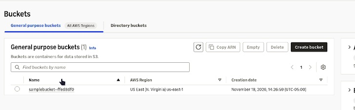
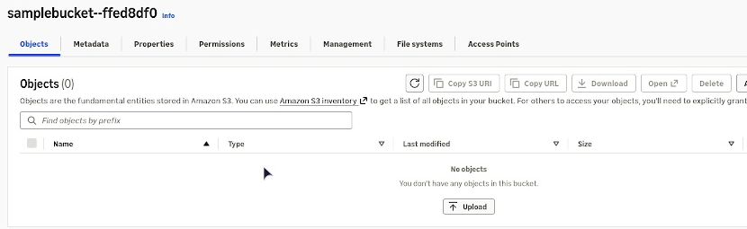
Resultado observado
El listado se obtiene y el bucket se abre. Objects (0) o No objects indican que está vacío, no un problema de permisos.
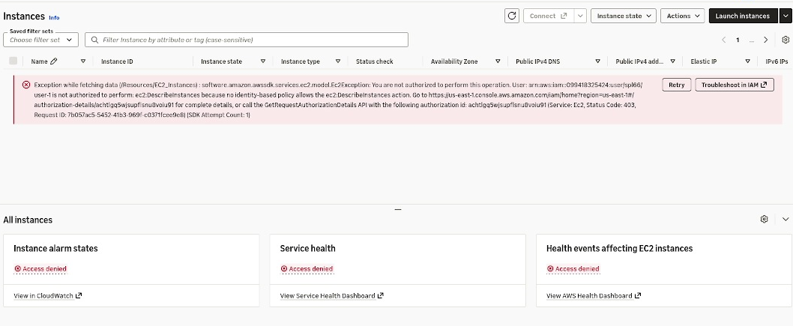
Sin cambiar de usuario, intenta abrir EC2 → Instances. La lectura de S3 no incluye permisos para ec2:DescribeInstances, por lo que la denegación es el resultado correcto de esta prueba.
Autenticación responde quién eres; autorización responde qué puedes hacer. Iniciar sesión correctamente no concede acceso general a todos los servicios.
07 Pruebas · user-2
Con user-2, abre EC2 → Instances y confirma la región del laboratorio. En la grabación se usa us-east-1; localiza únicamente LabHost.
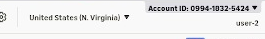
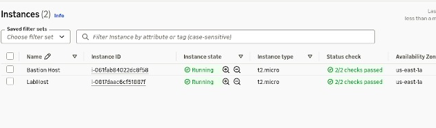
Resultado observado
user-2 puede consultar las instancias. La política de lectura de EC2 permite esta operación, pero no autoriza cambios de estado.
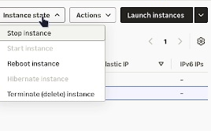
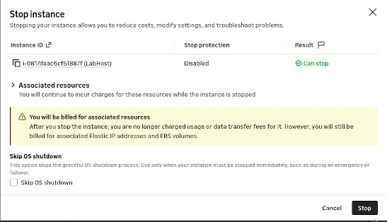
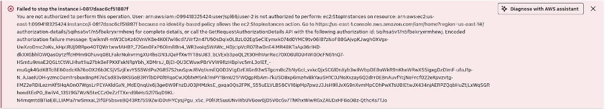
ec2:StopInstances.| Qué revisar en el rechazo | Qué aporta |
|---|---|
| La identidad user-2 | Confirma que la prueba corresponde al perfil correcto. |
| La acción ec2:StopInstances | Indica la operación que no está autorizada. |
| Recurso y región | Ayudan a confirmar que actuaste sobre la instancia del laboratorio. |
| Falta de autorización aplicable | Explica la diferencia entre lectura y cambio de estado. |
08 Pruebas · user-3
Inicia sesión como user-3, verifica la región, selecciona únicamente LabHost y repite Instance state → Stop instance → Stop.
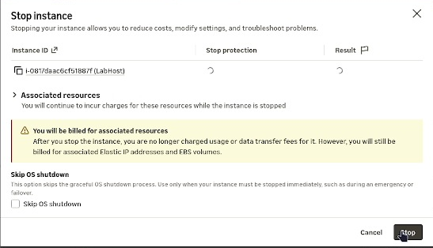
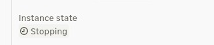
Stopping, no en Stopped verificado.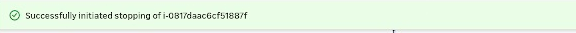
Resultado observado
La solicitud es aceptada y el panel muestra Stopping: la instancia se está deteniendo. Si el curso exige confirmar Stopped, espera y actualiza tu propio entorno; la grabación no muestra la transición final.
09 Resumen
El mínimo privilegio se comprueba en ambas direcciones: cada usuario hace lo necesario para su función y no puede ejecutar acciones fuera de ella.
| Usuario | Operación | Resultado | Evidencia |
|---|---|---|---|
| user-1 | Listar buckets y abrir el bucket | Permitido | Observado |
| user-1 | Consultar instancias EC2 | Denegado | Observado |
| user-2 | Consultar instancias EC2 | Permitido | Observado |
| user-2 | Detener LabHost | Denegado | Observado |
| user-2 | Listar buckets S3 | Denegado | Observado |
| user-3 | Solicitar StopInstances | Aceptado; Stopping | Observado |
| user-3 | Iniciar una instancia | Permitido por la política | Acción autorizada para EC2-Admin |
Vuelve a la guía de AWS Academy, revisa las asignaciones solicitadas y guarda únicamente las evidencias que pida tu instructor. Envía el laboratorio solo cuando la plataforma lo solicite y espera una confirmación real antes de finalizarlo.
Después, cierra las sesiones de prueba y termina el laboratorio siguiendo las instrucciones del curso. No publiques credenciales ni enlaces de una sesión activa.
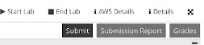
Regla de estudio
Antes de cambiar permisos, revisa: identidad → grupo → política → región → acción solicitada. Si una denegación forma parte del objetivo, no la elimines.
10 Video
Reproduce el video directamente desde la página para seguir la práctica paso a paso.
¿No carga el reproductor? Ver el video en YouTube ↗